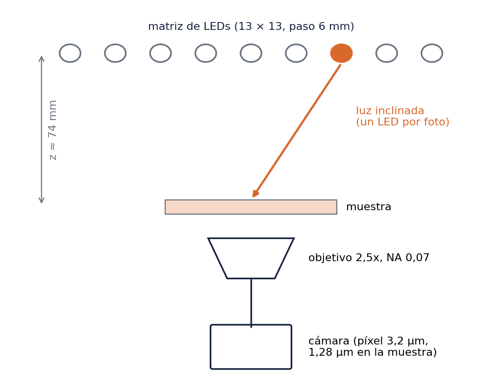
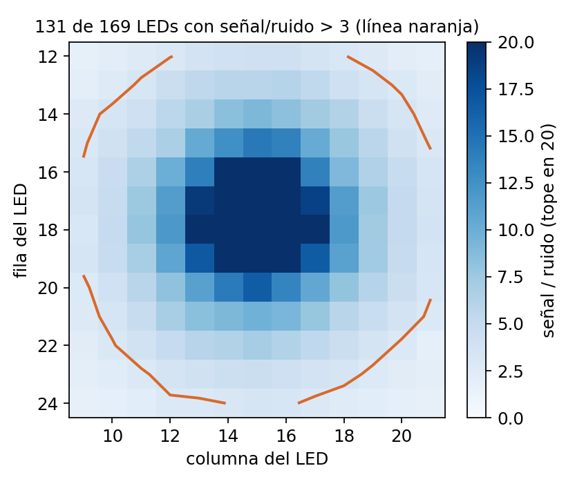
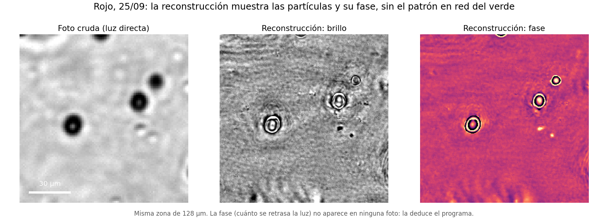
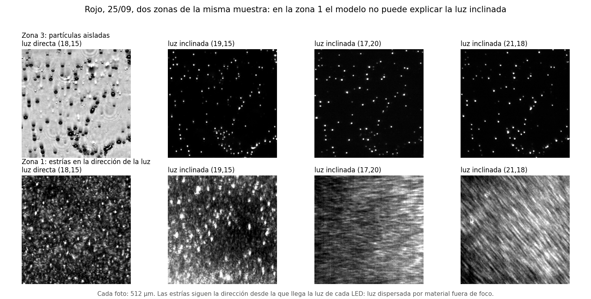
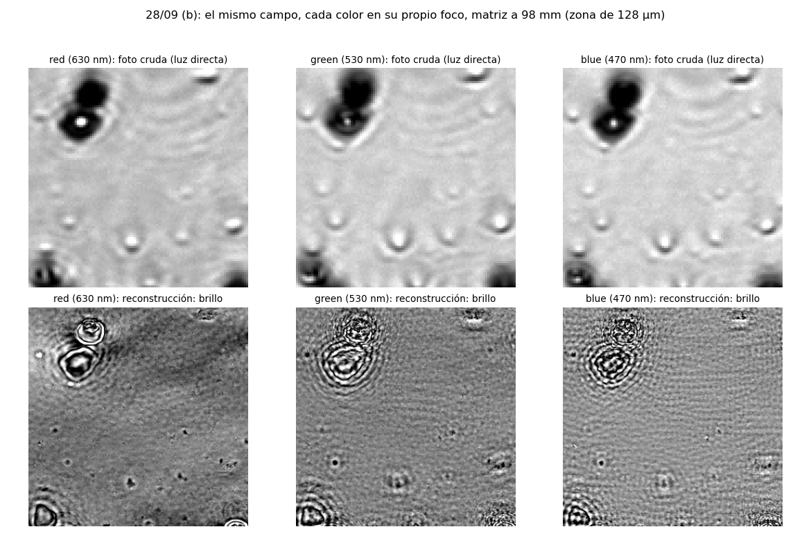

Resumen del trabajo, septiembre de 2026. Lucas Costilla. Repositorio reproducible-research-template.
Un microscopio no distingue detalles más chicos que cierto límite, que depende de la apertura numérica (NA) del objetivo y del color de la luz. Con nuestro objetivo de NA 0,07, ese límite es de unos 3,8 µm en luz verde 1.
La microscopía pticográfica de Fourier (FPM) busca superarlo sin cambiar el objetivo. Una matriz de LEDs ilumina la muestra desde muchos ángulos, uno por foto, y un programa combina las fotos en una imagen de mayor resolución. De paso recupera la fase, es decir, cuánto se retrasa la luz al atravesar la muestra, algo que ninguna foto registra.
El proyecto se proponía tres cosas: (1) reconstruir con FPM cada color; (2) combinar los tres colores (rojo 630 nm, verde 530 nm, azul 470 nm) en una reconstrucción multiespectral; y (3) que agentes de IA asistan tanto dentro del pipeline (decidir, controlar la calidad, reportar) como en su desarrollo.
| pieza | estado |
|---|---|
| FPM por color, en simulación | logrado |
| FPM por color, con datos reales: recuperación de la fase | logrado: en los tres colores (28/09 b), y la reconstrucción predice fotos que no usó |
| FPM por color, con datos reales: ganancia de resolución | no demostrado: el detalle más allá del objetivo no pasa la prueba de las dos mitades |
| Combinación multiespectral, en simulación | parcial: funciona en el caso para el que fue diseñada, no en general |
| Combinación multiespectral, con datos reales | parcial: con cada color en su foco, los tres reconstruyen las mismas partículas; el detalle fino todavía no coincide entre colores |
| Agentes dentro del pipeline | construidos y probados en simulación; con datos reales su juicio no fue confiable |
| Agentes en el desarrollo | logrado: encontraron los errores que invalidaban los resultados reales |
El montaje tiene una matriz de LEDs RGB con paso de 6 mm a unos 74 mm de la muestra, un objetivo 2,5x de NA 0,07 y una cámara de 12 bits con píxel de 3,2 µm (1,28 µm en la muestra). Se usan 13 × 13 = 169 LEDs, uno por foto y por color. La muestra son partículas de unos 5 µm (tamaño nominal; en la práctica, de tamaños variados) en DMSO.
| captura | qué tenía | para qué sirvió |
|---|---|---|
| 12/12/2025 | RGB, objetivo 2x NA 0,10 | primeras reconstrucciones, incluida una multiespectral; ahí aparecieron los errores de la sección 4 |
| 08/07/2026 | RGB, 1 ms para todos los LEDs | muy poca luz: solo 12 de 182 LEDs llegaban al 10 % del brillo del más brillante 2 |
| 24/09/2026 | RGB, 1/10/100 ms por LED, fotos a oscuras | receta nueva de exposición: 131 de 169 LEDs con señal/ruido mayor que 3 3 |
| 25/09/2026 | solo rojo, dos zonas (sets 1 y 3), fotos a oscuras y sin muestra (flats) | la reconstrucción real más confiable (set 3) y el diagnóstico de por qué falla (set 1) |
| 28/09/2026 | RGB del mismo campo, foco fijo en verde, flats (oscuros saturados: se usaron los del 25/09) | la primera comparación multiespectral real (sección 5) |
| 28/09/2026 (b) | RGB, matriz a 98 mm, 15×15 LEDs, cada color en su foco, exposición calculada por LED, flats y oscuros | la mejor captura real del proyecto (sección 5) |


Desde las imágenes se puede medir dónde cae el eje óptico respecto de la matriz: en diciembre, el ajuste del brillo por LED dio fila 17,45 y columna 14,65 4; en septiembre, el eje cae entre los LEDs (17,15) y (18,15). La altura z, en cambio, no se puede fijar desde las imágenes (sección 5); se usó la medida a mano, 74 mm.
El repositorio tiene un simulador del microscopio y un programa de reconstrucción por color (ePIE y Wirtinger flow). Además tiene una cadena multiespectral: lleva los tres colores a una grilla común, los reconstruye y los acopla desenvolviendo la fase con una longitud de onda sintética. Después ajusta la dispersión del material (cómo cambia el índice de refracción con el color) para obtener el espesor de la muestra.
Dentro del pipeline (agents/) hay tres agentes, construidos y probados en simulación. Los tres usan el propio Claude Code con respuestas de formato fijo:
Con datos reales, el control de calidad (en modo de prueba, con una regla fija en vez del modelo) dio "confianza alta" a una reconstrucción de diciembre que en realidad estaba congelada. Los colores coincidían porque la fase casi no se había movido, no porque el acople funcionara. Sin buenas reconstrucciones, el juicio automático no distingue "bien" de "vacío".
En el desarrollo, los agentes trabajaron en tres modos:
Con eso aparecieron cinco errores que daban resultados equivocados sin avisar: tres en nuestro programa de reconstrucción (el tamaño de la corrección, la escala inicial y la exposición) y dos en los datos de validación y configuración (la referencia y el objetivo). Aparte, tres en el código previo:
| error | consecuencia | cómo se encontró |
|---|---|---|
| La corrección que el programa aplica en cada vuelta era ~8000 veces más chica de lo debido con imágenes reales 10 | el programa devolvía casi la foto de partida: todo lo real anterior quedó invalidado, incluida la corrida multiespectral de diciembre | un agente que investigaba otra cosa; las pruebas usaban imágenes de 16–32 píxeles |
| La imagen de referencia (Zeiss, objetivo 2,5x, 2,344 µm/píxel 11) tenía menos detalle que una foto cruda | no servía para validar ganancia de resolución | rastreando su origen |
| Fotos sin corregir por exposición; escala inicial equivocada; las corridas de diciembre suponían otro objetivo | reconstrucciones sesgadas; geometría equivocada | revisando datos; el objetivo, al confirmar el hardware |
Código previo (ptyco-full-simulator): el gradiente caía en frecuencias corridas (error de adjunto 1,41; 0 es correcto) 12, la pupila ocupaba toda la imagen y la orientación de los LEDs estaba traspuesta |
esas reconstrucciones no reflejan la muestra | al adaptarlo a los datos del 25/09; confirmado por un verificador independiente |
Antes de mirar cada reconstrucción real se fijaron cuatro criterios, con umbrales calibrados en una simulación de la misma captura:
Verde, 24/09. Predice fotos no vistas, pero está dominada por un patrón en red que cambia con decisiones del programa. Más señal no alcanzó para sacarlo.
Rojo, 25/09, set 3. Es la primera reconstrucción real que se parece a la muestra: se ven las partículas y su fase, sin el patrón en red.

Rojo, 25/09, set 1 (otra zona, con mucha más señal en campo oscuro; corrida del 28/09).

Los tres colores del mismo campo, 28/09, con el foco fijo en verde. Fue la primera prueba multiespectral real. Las fotos crudas coincidían entre colores (0,71–0,78) 17, pero las reconstrucciones solo dentro de la banda del objetivo (hasta 0,52) 18, y casi nada con todo el detalle (hasta 0,06) 19. Solo el verde, el color enfocado, se parecía a la muestra, y el rojo predecía apenas las fotos no vistas (0,901 contra 0,992) 20. Eso llevó a la captura siguiente.
Los tres colores, 28/09 (b), con la matriz a 98 mm y cada color en su foco. Se cambiaron dos cosas a la vez: más solapamiento entre LEDs vecinos (de 31 % a 46 %) y el foco de cada color. Por eso no se puede separar cuánto aporta cada una.

Otros dos indicios del mismo tipo:
El pipeline existe y funciona en simulación: por color, multiespectral y con agentes. Con datos reales recupera la fase de la muestra en los tres colores: predecir fotos que no usó es evidencia de eso, y la prueba puede fallar (falló en el set 1). No demuestra ganancia de resolución: cada foto no vista comparte con sus vecinas buena parte del espectro, así que se puede predecir sin haber recuperado detalle más fino que el objetivo. Para eso está la prueba de las dos mitades, que todavía no pasa. El paso multiespectral real quedó a medio camino. Con cada color en su foco y más solapamiento (28/09 b), los tres colores reconstruyen la misma muestra y predicen las fotos que no vieron. Pero el detalle más allá del objetivo todavía no coincide lo suficiente, ni entre mitades ni entre colores, como para hablar de ganancia de resolución. Los agentes fueron más útiles para auditar (encontrar errores que nadie había visto) que para juzgar resultados reales sin referencia.
Próximos pasos:
src/ptyco_full_simulator/. Agentes: agents/.results/captura_2026-09-25_red/ (set 3), results/captura_2026-09-25_red_set1/ (set 1), results/captura_2026-09-28_rgb/ y results/captura_2026-09-28b/, cada una con su INFORME.md. Mapas de exposición de la última captura: data/captura_2026-09-28b/.docs/roadmap_agentic_multispectral_pipeline.md, secciones 6.x.scripts/lucas_tpwfp/.report/resumen/ (make_figs.py, build.py). Cada número tiene su fuente en data/numbers.json (anexo).Cada número del texto está en data/numbers.json, escrito por scripts/compute_numbers.py, y se verifica con scripts/check_provenance.py report/resumen/resumen.md.
lambda/(2 NA) con lambda = 0.53 um y NA = 0.07results/esferas_2026-07-08/sanity/radiance_census.jsonscripts/resumen_numbers.py::leds_utiles_2409results/led_geometry_2025-12-12/center_from_radiance.jsonresults/captura_2026-09-24/synth_overlap/summary.jsonresults/captura_2026-09-24/synth_overlap/summary.jsonresults/captura_2026-09-24/synth_overlap/summary.jsonscripts/compute_numbers.py::multispectral_thickness_correlationscripts/compute_numbers.py::unwrapping_error_reduction_factorlr_n_px / step_max = (400*400)/20, src/ptyco_full_simulator/reconstruction.py (step_max = 20)~/Documents/AleYLu/elefante/2025-12-02/3x3/3x3_Metadata(tif).xml (Scaling Distance X = 2.344e-6 m; objetivo Plan-Neofluar 2.5x/0.075)scripts/resumen_numbers.py::error_adjunto_originalresults/captura_2026-09-25_red/resumen_real.jsonresults/captura_2026-09-25_red/resumen_real.jsonresults/captura_2026-09-25_red_set1/veredicto.jsonresults/captura_2026-09-25_red_set1/veredicto.jsonresults/captura_2026-09-28_rgb/fotos_crudas_entre_colores.jsonresults/captura_2026-09-28_rgb/multiespectral_por_banda.jsonresults/captura_2026-09-28_rgb/multiespectral_por_banda.jsonresults/captura_2026-09-28_rgb/multiespectral_registrado.jsonresults/captura_2026-09-28b/criterios_b.jsonresults/captura_2026-09-28b/criterios_b.jsonresults/captura_2026-09-28b/comparar_colores.jsonresults/captura_2026-09-28b/comparar_colores.jsonscripts/resumen_numbers.py::cv_heldoutscripts/resumen_numbers.py::solapamiento_vecinos_pctscripts/resumen_numbers.py::solapamiento_vecinos_pct